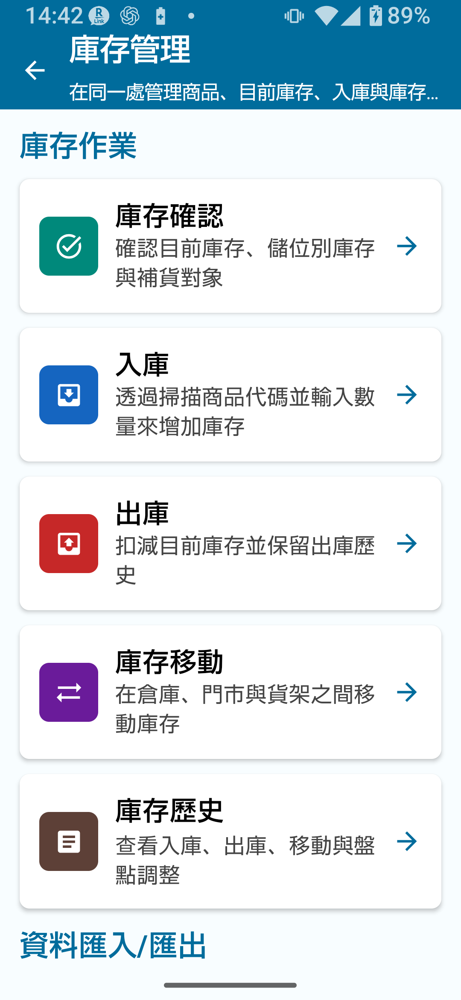
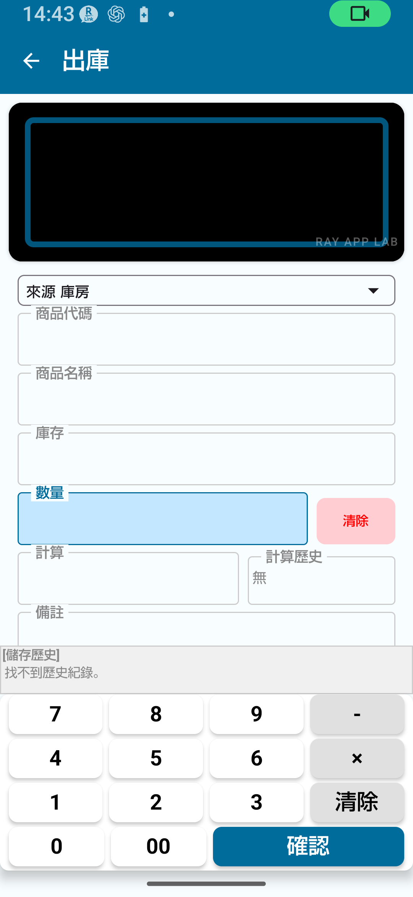
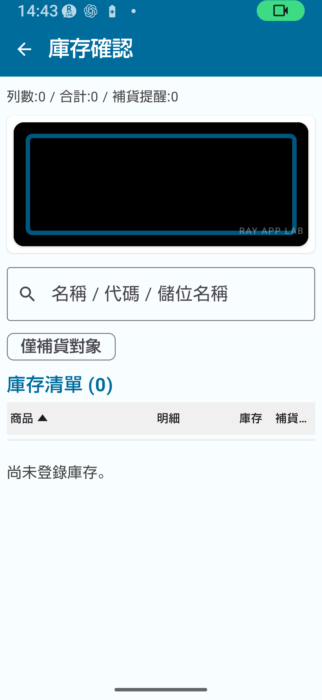
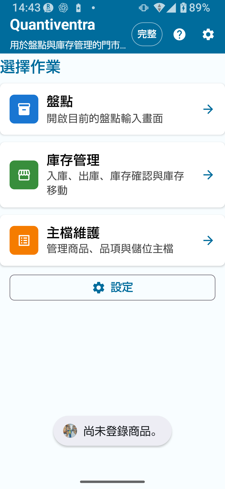
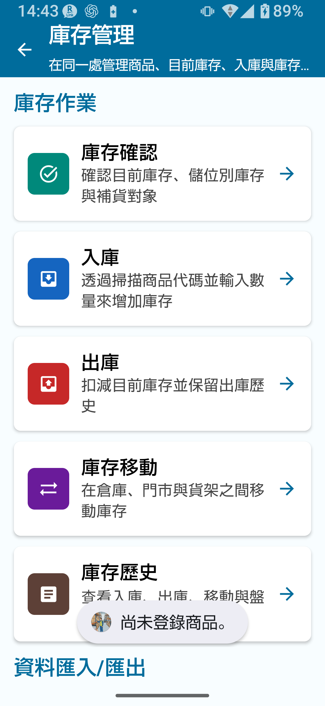
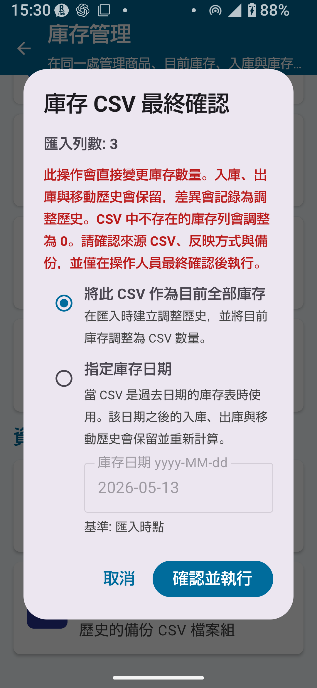

第1章
標準版概覽
庫存管理標準版支援的記錄數比免費版更多。您可以更順暢地處理日常入庫、出庫、庫存查詢和庫存歷史作業，位置管理的使用範圍也會擴大。
標準版限制
| 項目 | 免費版 | 標準版 |
|---|---|---|
| 主資料筆數 | 最多 30 筆 | 最多 300 筆 |
| 庫存歷史筆數 | 最多 30 筆 | 最多 1,000 筆 |
| 匯出筆數 | 最多 30 筆 | 最多 300 筆 |
| 鎖定螢幕旋轉 | ✗ | ○ |
| 位置主資料登錄 | 免費版中受限 | 可在標準版限制範圍內使用 |
| 直接編輯已登錄累計總量 | ✗ | ✗（需完整版） |

第2章
與免費版的差異
✅ 標準版新增或擴充的內容
- 主資料上限從 30 筆提升至 300 筆
- 庫存歷史上限從 30 筆提升至 1,000 筆
- 匯出上限從 30 筆提升至 300 筆
- 可使用螢幕旋轉鎖定功能
- 擴大位置管理的使用範圍
- 更容易持續維護日常入庫、出庫、庫存查詢與歷史記錄
第3章
入庫（Stock In）
入庫作業會增加庫存。當商品到貨時使用，例如採購、收貨和類似交易。
入庫步驟
- 前往庫存管理 → 入庫。
- 掃描條碼或輸入商品代碼。
- 確認商品名稱。若代碼尚未登錄，請建立新的商品主資料項目。
- 在新的商品主資料項目中，登錄商品名稱、售價和補貨點。
- 儲存後返回入庫畫面，已登錄的商品代碼與名稱會自動帶入。
- 選擇目的位置（倉庫、門市等）。
- 輸入入庫數量。
- 點選儲存。數量會立即加入庫存。
- 在庫存查詢或庫存歷史中確認更新。
💡 關於商品主資料屬性售價和補貨點是在商品主資料中管理的屬性，不需要在每次入庫交易中輸入。一般入庫畫面中，請專注於輸入數量、位置和備註。
⚠ 注意入庫會立即反映到庫存。儲存前請務必確認數量和位置。若儲存後發現數量錯誤，請查看庫存歷史，並依照應用程式內的指引進行修正、反向處理或記錄調整。
第4章
出庫（Stock Out）
出庫作業會減少庫存。用於銷售、出貨、交貨和類似交易。

出庫步驟
- 前往庫存管理 → 出庫。
- 掃描條碼或輸入商品代碼。
- 確認商品名稱。
- 選擇來源位置（庫存要從哪個位置扣除）。
- 輸入出庫數量。
- 點選儲存。數量會立即從庫存中扣除。
- 在庫存查詢或庫存歷史中確認更新。
💡 關於庫存欄位出庫畫面上的庫存欄位會顯示所選商品與位置的目前庫存，僅供參考；它是顯示欄位，不是可編輯的輸入欄位。儲存出庫數量後，庫存會隨之減少。
🚨 重要請勿輸入超過目前庫存的出庫數量。輸入出庫數量前，請先依位置確認庫存水準。
第5章
庫存查詢
庫存查詢一開始會顯示每項商品的合併庫存總量。補貨判斷會將所有「納入補貨判斷」已開啟位置的庫存總量，與商品主資料中的補貨點比較。

庫存查詢步驟
- 前往庫存管理 → 庫存查詢。
- 尋找要查詢的商品（可搜尋或捲動列表）。
- 找出低於補貨點的商品（會顯示為可能需要補貨）。
- 點選商品可查看各位置明細、歷史記錄與詳細資訊。在位置明細畫面中，補貨判斷不會顯示，或會視為停用。
第6章
庫存歷史
庫存歷史會顯示所有入庫、出庫、調撥、盤點調整、期初庫存和 CSV 匯入作業的紀錄。

可在庫存歷史中查看的內容
- 日期/時間與作業類型（入庫、出庫、調撥、調整等）
- 商品代碼與名稱
- 位置與數量變動
- 備註
💡 提示如果庫存數量對不上，可以回溯庫存歷史，檢查是否有輸入錯誤或未預期的調整。
第7章
位置管理
標準版主要使用「倉庫」和「門市」這兩個基本位置。
| 模式 | 可用位置 |
|---|---|
| 簡單 A | 僅倉庫 |
| 簡單 B | 倉庫 + 門市 |
| 簡單 C | 僅門市 |
庫存調撥
庫存調撥會將庫存數量從一個位置移動到另一個位置。
⚠ 注意請勿在同一個位置之間執行調撥。如果只有一個位置（例如簡單 A），就不需要庫存調撥，請改用入庫、出庫或修正作業。
💡 提示若要使用詳細位置（例如貨架編號），需要在設定中切換至詳細模式。詳細模式會在使用完整版功能時使用。
第8章
CSV 匯入 / 匯出
庫存管理可讓您使用 CSV 檔案匯入、匯出並備份庫存資料。
🚨 重要CSV 匯入作業可能大幅變更您的資料。匯入前請務必先匯出備份 CSV。
庫存 CSV 規格
| CSV 類型 | 用途 | 主要欄位 | 必填 / 選填 | 備註 | 可用版本 |
|---|---|---|---|---|---|
| 庫存 CSV（含位置欄位） | 匯入各位置的庫存資料 | location, item_code, quantity, product_name | location、item_code、quantity 為必填；product_name 依條件必填 | 未登錄代碼需 product_name 欄位 | 庫存管理標準版以上 |
| 庫存 CSV（不含位置欄位） | 將庫存資料匯入到指定位置 | item_code, quantity, product_name | item_code、quantity 為必填 | 匯入時選擇目標位置 | 庫存管理標準版以上 |
| 備份 CSV | 完整資料備份與還原 | 商品、目前庫存、位置、類別 — 多個檔案 | 需要完整備份組 | 可能會分成多個檔案 | 庫存管理標準版以上 |
使用欄位對應畫面
匯入 CSV 時，您需要選擇哪個欄位對應商品代碼、商品名稱、數量、位置等資料。
- 選擇 CSV 檔案。
- 在欄位對應畫面中，將每個 CSV 欄位指定到對應的欄位（商品代碼、數量等）。
- 確認指定結果並執行匯入。
⚠ 常見 CSV 匯入錯誤
- 缺少必填欄位
- 同一個欄位被指定到多個欄位
- 數量欄位為空或不是數字
- 未登錄代碼未選擇商品名稱欄位
- 沒有位置欄位，也沒有選擇目標位置
- CSV 為空，或沒有可匯入的列

第9章
取代目前庫存
取代目前庫存是一種 CSV 匯入模式，會將檔案中的數量視為新的目前庫存。既有歷史記錄會保留，差異則會記錄為調整歷史項目。
🚨 重要：請謹慎使用取代目前庫存
- CSV 中未包含的庫存列可能會被設為 0。
- 此作業可能對既有庫存資料造成重大影響，請務必先備份。
- 執行前請仔細閱讀確認畫面。
取代目前庫存步驟
- 匯出備份 CSV（必須）。
- 前往庫存管理 → CSV 匯入 → 取代目前庫存。
- 選擇要匯入的 CSV 檔案。
- 在欄位對應畫面確認欄位對應。
- 在確認畫面仔細檢查取代內容（調整內容）。
- 確認無誤後執行匯入。
- 在庫存歷史中確認調整紀錄。


第10章
以入庫方式新增
以入庫方式新增是一種 CSV 匯入模式，會將檔案中的數量作為入庫交易加入既有庫存。與取代目前庫存不同，它是加入目前庫存，而不是覆蓋目前庫存。
| 匯入模式 | 行為 | 使用範例 |
|---|---|---|
| 取代目前庫存 | 將 CSV 數量視為新的目前庫存，並將差異記錄為調整歷史 | 盤點後庫存修正、初始設定 |
| 以入庫方式新增 | 將 CSV 數量作為入庫加入目前庫存 | 批次入庫匯入 |
💡 提示第一次建立庫存時使用取代目前庫存；要把數量加到既有庫存時，使用以入庫方式新增。執行匯入前，請先確認需要哪一種模式。
第11章
重要注意事項
⚠ 設定詳細位置若要使用詳細位置，請在設定中切換至詳細模式。如果仍在簡單 A/B/C 模式，詳細位置不會顯示。
⚠ 操作前確認位置和數量入庫、出庫、調撥和 CSV 匯入會立即反映到庫存。每次操作前都請先確認位置和數量。
🚨 CSV 操作前請先備份使用取代目前庫存、以入庫方式新增或備份還原作業前，請務必先備份。
第12章
建議工作流程
每日記錄入庫與出庫
- 每次商品到貨時，都透過入庫登錄到貨庫存。
- 每次商品出貨時，都透過出庫記錄出庫庫存。
- 在商品主資料中設定補貨點，並使用庫存查詢監控補貨時機。
定期查詢庫存
- 定期檢查庫存數量，例如每週、每月或依需要進行。
- 搭配盤點使用，定期確認實際數量是否與庫存記錄一致。
定期備份
- 每月至少匯出一次備份 CSV，並儲存到電腦或雲端儲存空間。
💡 若您有以下需求，建議考慮升級至完整版
- 希望盤點結果自動更新庫存
- 需要直接編輯已登錄的累計庫存總量
- 商品數量超過 300 種
📌 本章重點
- 標準版提高上限：主資料最多 300 筆、歷史記錄最多 1,000 筆、匯出最多 300 筆。
- 入庫與出庫會立即反映到庫存；儲存前請確認數量和位置。
- 庫存歷史會完整記錄所有入庫、出庫、調撥和調整作業。
- CSV 匯入有兩種模式：取代目前庫存與以入庫方式新增。使用任一模式前都請先備份。
- 位置透過簡單 A/B/C 設定。若要使用詳細位置，請切換至詳細模式。
- 直接編輯已登錄累計總量需要完整版。
🔍 使用前注意事項
- 請在應用程式顯示的選項範圍內使用位置主資料。若需要詳細位置管理，請確認目前模式，並視需要考慮使用完整版功能。
- 如果入庫或出庫資料儲存錯誤，請查看庫存歷史，並依照應用程式內的指引進行修正、反向處理或記錄調整。
- 匯出備份 CSV 組時，請將產生的檔案放在一起並妥善保存。
- 庫存調撥畫面的實際操作流程
- CSV 欄位對應與取代確認畫面的截圖